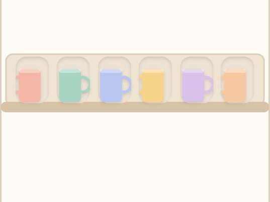
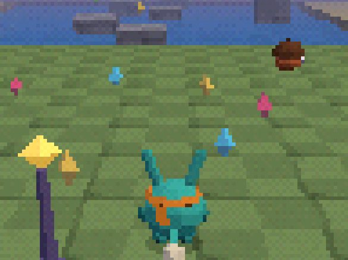
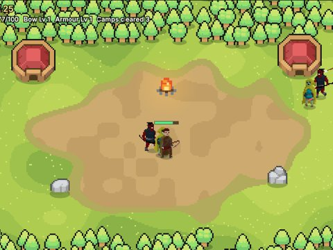

Just So
A cozy tidying puzzle for your phone. 100 levels where everything has a right place.

A cozy tidying puzzle for your phone. 100 levels where everything has a right place.

A low-poly 3D collect-a-thon platformer that runs in iPhone Safari. Early test level.
A shared tracker for the 75 Hard challenge: daily checklist, progress photos, coins for streaks and a crew leaderboard.
Private to my crew, so no public link.

A medieval warband sandbox. Recruit and train soldiers, trade between towns, pick sides between two kingdoms and lead your army in real-time battles against an orc horde. Started in MonoGame and Godot, now playable in the browser.
I'm an IT graduate from the University of Canberra, now studying a Master of Cyber Security at QUT. My day job is in football administration: running competitions, managing data and reporting, and working with a lot of stakeholders. On the side I build games and small web apps to keep learning.